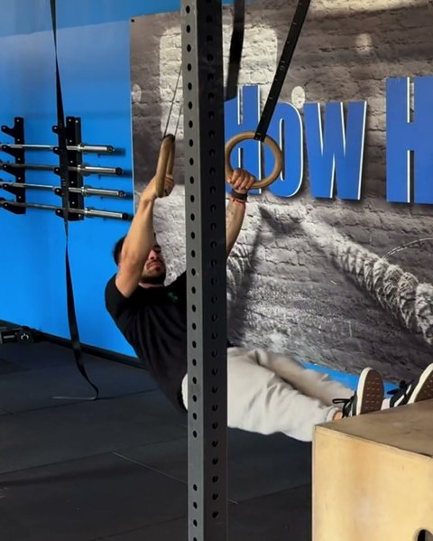
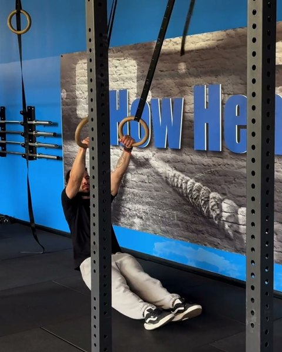
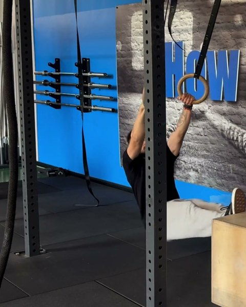
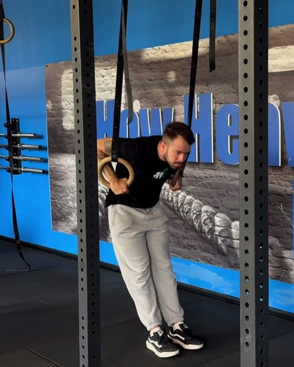
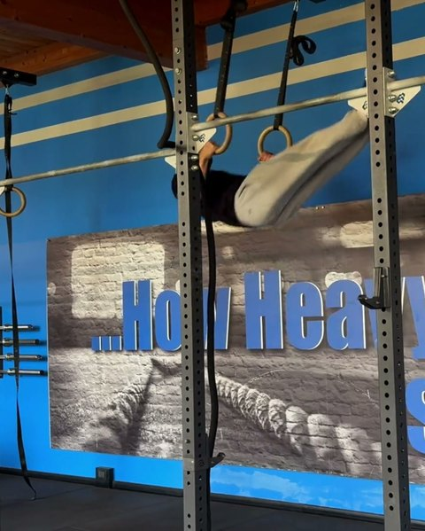
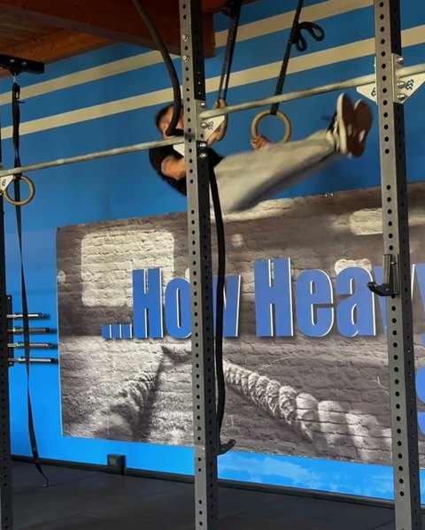

FR 08 · Ring Muscle Up
Guida gratuita

Ring Muscle Up:
da dove parti
Sette test per trovare il tuo gradino. Tre giorni di fila per salirlo.
Filipe Ramos · coach di ginnastica · @coachfiliperamos
Scarica il PDFIl ring muscle up è un row che diventa un dip.
Gli anelli si muovono, quindi la tirata si fa con il corpo quasi orizzontale e gli anelli che passano bassi, verso i fianchi, prima di salirci sopra. Dal gradino 1 al 4 costruisci il kipping ring row: talloni a terra, piedi sul box, poi la tirata bassa all'ombelico. Dal 5 al row si aggiunge il turnover, e dal 6 il lavoro passa agli anelli alti. Questa è la scala del programma First Kipping Ring Muscle Up dell'app FAR Training.
1. Il test: trova il tuo gradino
Fai i test in ordine, riposando quanto ti serve tra uno e l'altro. Ti fermi al primo che non passi: quello è il tuo gradino. Dal test 1 al 4 servono 5 ripetizioni pulite di fila, nel 5 e nel 6 cinque ripetizioni singole.
-
 0
0Strict Pull Up + Kipping Chest to Bar
5 strict pull up e 5 chest to bar di fila, e sai fare lo strict ring dip. È il punto di partenza.
-

1Elevated Feet Kipping Ring Row
5 ripetizioni pulite. I piedi sul box.
-

2Kipping Low Pull Ring Row
5 ripetizioni pulite. Talloni a terra, la tirata scende all'ombelico.
-

3Elevated Feet Kipping Low Pull Ring Row
5 ripetizioni pulite. Piedi sul box e tirata all'ombelico.
-

4Kipping Ring Row + Turnover
5 ripetizioni pulite. Al row si aggiunge il turnover.
-

5Hanging Kipping Ring Row
5 ripetizioni singole. Agli anelli alti: è la tirata del muscle up da sola.
-

6Hanging Kipping Low Pull Ring Row
5 ripetizioni singole. Agli anelli alti, con la tirata all'ombelico.
-
7
Kipping Ring Muscle Up
3 serie al massimo, 3' di recupero. Ne basta uno. Esplosivo e orizzontale: fidati del turnover.
Servono anelli regolabili e un box. I test dall'1 al 4 sono con gli anelli bassi.
2. Cosa allenare sul tuo gradino
Tre giorni di fila, poi si ricomincia: kipping, row, dip. Il kipping apre con il pulldown all'elastico e l'open kipping agli anelli. Il row allena il drill del tuo gradino e chiude con un row strict difficile. Il dip allena il fondo, dove atterra la transizione. Le percentuali sono del tuo massimo di ripetizioni; al secondo giro lo strict ring dip diventa kipping ring dip. Sono le dosi con cui si parte nell'app. Quando il lavoro diventa facile, rifai il test del tuo gradino.
Gradino 1 Non passi il test 1
| Kipping | Dose | Recupero |
|---|---|---|
| Elastic Pulldown | 3 × 5 | 30" |
| Open Kipping (Rings) | 3 × 10 | 40" |
| Toes to Rings | 5 × 5 | 1' |
| Row | Dose | Recupero |
| Scapular Ring Row | 1 × 15 | – |
| Kipping Ring Row | 5 × 5 | 45" |
| Ring Row | 3 × 8 | 90" |
| Dip | Dose | Recupero |
| Ring Support Hold | 3 × 15" | 15" |
| Ring Dip Isometric Hold (Bottom) | 3 × 10" | 45" |
| Strict Ring Dip | 3 × 30% | 1' |
Gradino 2 Non passi il test 2
| Kipping | Dose | Recupero |
|---|---|---|
| Elastic Pulldown | 3 × 5 | 30" |
| Open Kipping (Rings) | 3 × 10 | 40" |
| Toes to Rings | 5 × 7 | 1' |
| Row | Dose | Recupero |
| Scapular Ring Row | 1 × 15 | – |
| Elevated Feet Kipping Ring Row | 5 × 5 | 45" |
| Elevated Feet Ring Row | 3 × 5 | 90" |
| Dip | Dose | Recupero |
| Ring Support Hold | 3 × 15" | 15" |
| Ring Dip Isometric Hold (Bottom) | 3 × 15" | 45" |
| Strict Ring Dip | 3 × 35% | 1' |
Gradino 3 Non passi il test 3
| Kipping | Dose | Recupero |
|---|---|---|
| Elastic Pulldown | 3 × 5 | 30" |
| Open Kipping (Rings) | 3 × 10 | 40" |
| Toes to Rings | 5 × 9 | 1' |
| Row | Dose | Recupero |
| Scapular Ring Row | 1 × 15 | – |
| Kipping Low Pull Ring Row | 5 × 5 | 45" |
| Low Pull Ring Row | 3 × 8 | 90" |
| Dip | Dose | Recupero |
| Ring Support Hold | 3 × 15" | 15" |
| Ring Dip Isometric Hold (Bottom) | 3 × 20" | 45" |
| Strict Ring Dip | 3 × 40% | 1' |
Gradino 4 Non passi il test 4
| Kipping | Dose | Recupero |
|---|---|---|
| Elastic Pulldown | 3 × 5 | 30" |
| Open Kipping (Rings) | 3 × 10 | 40" |
| Kipping Ring Pullback | 5 × 3 | 30" |
| Row | Dose | Recupero |
| Scapular Ring Row | 1 × 15 | – |
| Elevated Feet Kipping Low Pull Ring Row | 5 × 5 | 45" |
| Elevated Feet Low Pull Ring Row | 3 × 5 | 90" |
| Dip | Dose | Recupero |
| Ring Support Hold | 3 × 15" | 15" |
| Ring Dip Isometric Hold (Bottom) | 3 × 25" | 45" |
| Strict Ring Dip | 3 × 45% | 1' |
Gradino 5 Non passi il test 5
| Kipping | Dose | Recupero |
|---|---|---|
| Elastic Pulldown | 3 × 5 | 30" |
| Open Kipping (Rings) | 3 × 10 | 40" |
| Kipping Ring Pullback | 5 × 3 | 30" |
| Row | Dose | Recupero |
| Ring Turnover Practice | 1 × 10 | – |
| Kipping Ring Row + Turnover | 5 × 5 | 45" |
| Elevated Feet Low Pull Ring Row | 3 × 5 | 90" |
| Dip | Dose | Recupero |
| Ring Support Hold | 3 × 15" | 15" |
| Ring Dip Isometric Hold (Bottom) | 3 × 30" | 45" |
| Strict Ring Dip | 3 × 50% | 1' |
Gradino 6 Non passi il test 6
| Kipping | Dose | Recupero |
|---|---|---|
| Open Kipping (Rings) | 3 × 10 | 30" |
| Kipping Ring Pullback | 3 × 3 | 30" |
| Hanging Kipping Ring Row | 5 × 3 | 30" |
| Row | Dose | Recupero |
| Ring Turnover Practice | 1 × 10 | – |
| Kipping Ring Row + Turnover | 5 × 5 | 45" |
| Elevated Feet Low Pull Ring Row | 3 × 5 | 90" |
| Dip | Dose | Recupero |
| Ring Support Hold | 3 × 15" | 15" |
| Ring Dip Isometric Hold (Bottom) + Pendulum | 3 × 20" | 45" |
| Strict Ring Dip | 3 × max | 3' |
Gradino 7 Non passi il test 7
| Kipping | Dose | Recupero |
|---|---|---|
| Open Kipping (Rings) | 3 × 10 | 30" |
| Kipping Ring Pullback | 3 × 5 | 30" |
| Hanging Kipping Low Pull Ring Row | 5 × 3 | 30" |
| Row | Dose | Recupero |
| Ring Turnover Practice | 1 × 10 | – |
| Elevated Feet Kipping Ring Row + Turnover | 5 × 5 | 1' |
| Elevated Feet Low Pull Ring Row | 3 × 8 | 90" |
| Dip | Dose | Recupero |
| Ring Support Hold | 3 × 15" | 15" |
| Ring Dip Isometric Hold (Bottom) + Pendulum | 3 × 20" | 45" |
| Strict Ring Dip | 3 × 40% | 1' |

Il programma completo
Nell'app FAR Training ogni gradino è una fase intera: due giri di tre giorni, la progressione delle dosi giorno per giorno, il video di ogni esercizio e il test di fase alla fine. Il programma First Kipping Ring Muscle Up arriva sull'app: lo annuncio su @coachfiliperamos.
Non sai se hai passato un test? Mandami il video in DM su @coachfiliperamos e ti dico da che gradino partire.
Alleni in un box? Il seminario lo faccio da voi.
Apri @coachfiliperamos